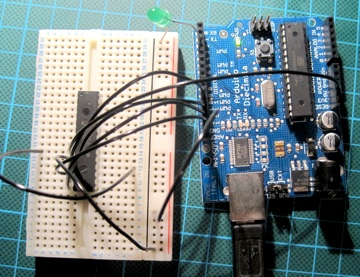
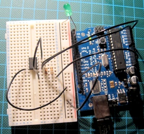
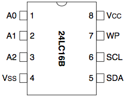

Download bus-ninja-1.0.tar.gz
Download .HEX file for Arduino Diecemilia
Browse source
Example AT90USB162 Schematic + PCB
A Bus Pirate clone for Atmel AVR microcontrollers, including the Arduino and Teensy. Featuring a serial console, I2C, SPI and more. On the USB enabled AVRs (AT90USBxxxx and ATMEGAxxUx) USB over serial is used, allowing for single chip Bus Ninja hardware.
Bus Ninja lets you quickly protoype with I2C and SPI devices without writing any code. Just wire up a device to your board and start talking to it directly from the Bus Ninja console.
> helpPrint list of available commands
> versionPrint build string
> resetReset board
> spiEnter SPI bus mode
> i2cEnter i2c bus mode
> led <0-6>Set LED pattern
When connecting up I2C and SPI devices, signals should be connected the pins below. For Teensy, use the AT90USBxxxx variants.
| Function | Arduino pin | AT90USBxxxx/ATMEGAxxUx pin |
|---|---|---|
| I2C SDA | Analog 4 (PORTC4) | PORTB2 |
| I2C SCL | Analog 5 (PORTC5) | PORTB1 |
| SPI CLK | Digital 13 (PORTB5) | PORTB1 |
| SPI MISO | Digital 12 (PORTB4) | PORTB3 |
| SPI MOSI | Digital 11 (PORTB3) | PORTB2 |
| SPI CS | Digital 9 (PORTB1) | PORTB4 |
| LED | Digital 2 (PORTD2) | PORTD4 |
> spi > [0x40 0x0A 0x28] CS ENABLED WRITE: 0x40 WRITE: 0x0A WRITE: 0x28 CS DISABLED(see also the command examples in the test/ directory)
screen /dev/ttyUSB0 9600Type led followed by an integer from 0-6 to set the LED fade pattern.

Wire the chip to the Arduino like this:
| MCP23S17 | Arduino |
|---|---|
| VDD | 5V |
| VSS | GND |
| SO | SPI MISO (Digital 12) |
| SI | SPI MOSI (Digital 11) |
| CS | SPI CS (Digital 9) |
| SCK | SPI CLK (Digital 13) |
| Reset | 5V |
Connect an LED, voltmeter or oscilloscope to GPA0. Then, open the Bus Ninja serial console and enter commands.
Enter SPI modespiInitialise the chip for non-sequential access
[0x40 0x0A 0x28] # WR_REG(0) IOCONA SEQ_OFF|HAENSet all of PORTA as outputs
[0x40 0x00 0x00] # WR_REG(0) GPIOADIR ALL_OUTPUTSet GPIOA-0 high
[0x40 0x12 0x01] # WR_REG(0) GPIOA GPIOA-0Set GPIOA-0 low
[0x40 0x12 0x00] # WR_REG(0) GPIOA GPIOA-0
 
Wire the chip to the Arduino like this:
| 24LC16B | Arduino |
|---|---|
| VCC | 5V |
| VSS | GND |
| SDA | I2C SDA (Analog 4) |
| SI | I2C SCL (Analog 5) |
| Reset | 5V |
For I2C to properly function you must add two pullup resistors. One from SDA to 5V, one from SCL to 5V.
Enter I2C modei2cWrite {0x10, 0x20, 0x30, 0x40} at address 0x0000
[0xA6 0 0 0x10 0x20 0x30 0x40]Set the read pointer to address 0x0000
[0xA6 0 0]Read back your 4 bytes
[0xA7 r:4]
cd src && make BOARD=ARDUINO clean && make BOARD=ARDUINO && make BOARD=ARDUINO program
cd src && make BOARD=TEENSY clean && make BOARD=TEENSY && make BOARD=TEENSY program
Arduino Diecemilia
Teensy 1.0
Flatworm
Arduino Duemilanove
Arduino Mega
Teensy 2.0
AT90USBKEY
Micropendous
Bumble-b
Q. Why is it called Bus Ninja?
A. Because Ninjas are better than Pirates and Yarrrrrduino sounds silly.
Q. What hardware does Bus Ninja run on?
A. It was originally developed on Teensy1 (AT90USB162), then later ported to Arduino (ATMega168). Adding support for other AVRs should just be a matter of changing the definitions in config.mk.
Q. Why do I lose characters when I paste to the Arduino?
A. The Arduino serial port isn't flow controlled, use the USB version of Bus Ninja
Q. How do I port Bus Ninja to my custom AVR/Arduino board?
A. Edit config*.mk, setup FCPU, MCU, LED PORT/PIN and desired features.
Q. Why aren't you using LUFA's scheduler/task framework?
A. Bus Ninja needs to remain portable to other stacks and processors, so it doesn't use LUFA's application framework.
Q. How do I add a new command?
A. Use the macros DECLARE_COMMAND(mycmd), ADD_COMMAND(mycmd) and DEFINE_COMMAND(mycmd) in global_commands.c
Q. How do I add a new bus?
A. Declare a bus_interface_t, provide handlers for the methods, enable it with bus_init(&my_bus). See bus_spi.[ch]. The buses are enabled by a command in global_commands.c
Q. How do I disable a feature?
A. Edit config.mk, comment out unused features.
Q. Why isn't the LED command hooked up to the on-board LED on Arduino?
A. The LED is on the SPI CLK line, so is needed for SPI.
Q. Why clone the Bus Pirate?
A. To get to a single chip Bus Pirate work-a-like with a free software toolchain.
Unless otherwise stated, everything is licensed under CC-0.
Bus Ninja also contains code from:
LUFA (Dean Camera)
userial (Thomas Pircher)
estick-jtag/opendous-jtag (Cahya Wirawan, Vladimir Fonov, Dean Camera, Denver Gingerich)
Although Bus Ninja shares no code with the Bus Pirate project, it wouldn't exist without it. Thanks.